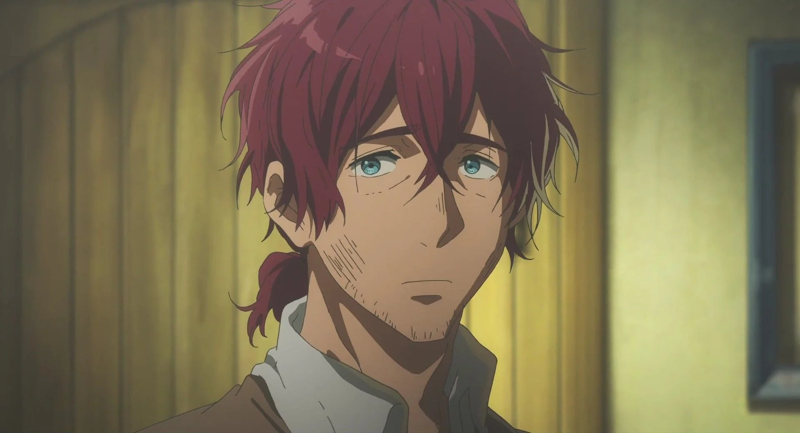
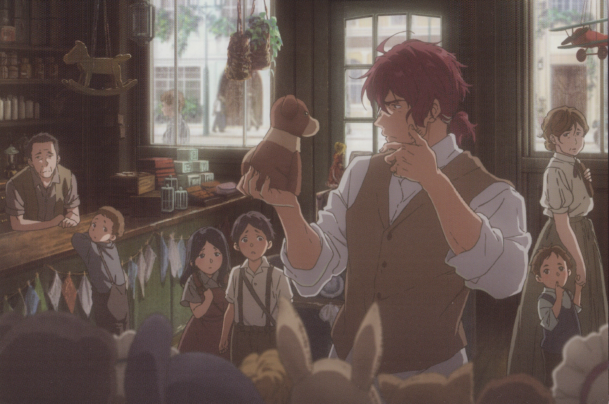
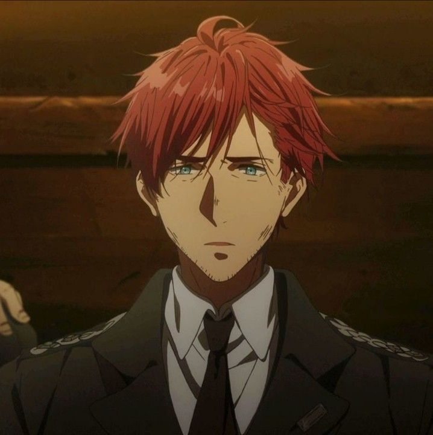
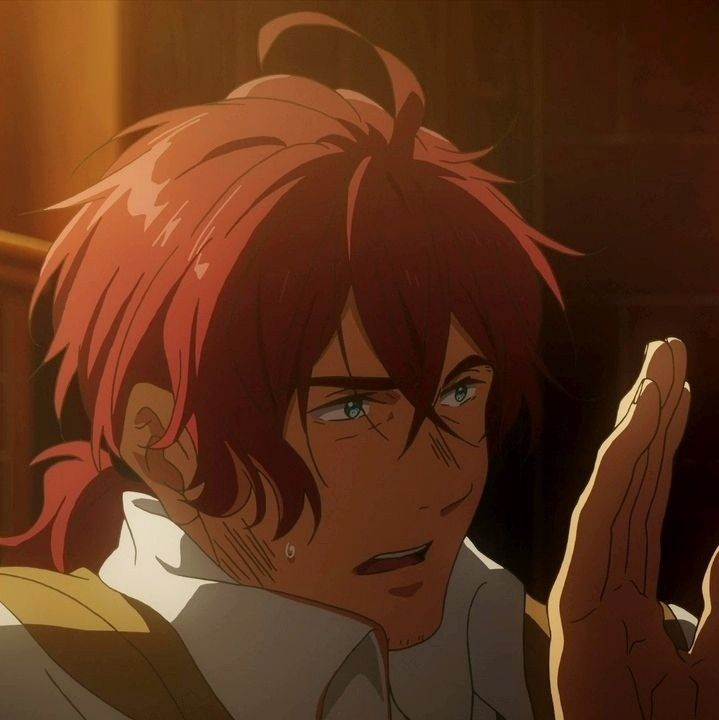
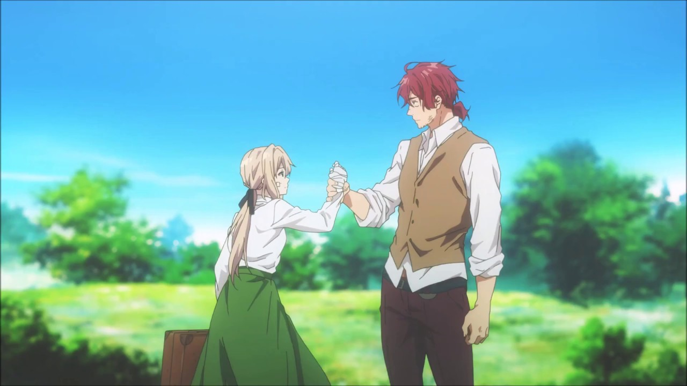
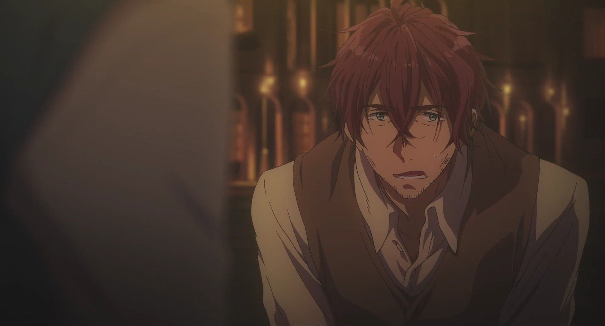

Caludia Hodgins

Claudia Hodgins es un exsoldado que sirvió como oficial durante la guerra, donde formó una estrecha amistad con Gilbert Bougainvillea. Aunque era competente en su rol militar, Hodgins siempre mostró un carácter más relajado y pragmático, deseando una vida lejos de los horrores del combate. Después de la guerra, decidió dejar atrás el conflicto y fundar la CH Postal Company, un lugar donde las palabras pudieran conectar a las personas en lugar de separarlas.
Tras la desaparición de Gilbert, Hodgins asumió la responsabilidad de cuidar de Violet, siguiendo el deseo de su amigo. Aunque al principio se mostró renuente, terminó viendo en ella a una joven vulnerable que necesitaba orientación y apoyo para adaptarse a un mundo en paz. A pesar de su carácter jovial y sarcástico, Hodgins se convirtió en una figura paterna para Violet, guiándola y ayudándola a encontrar un propósito como Auto Memory Doll.
Como fundador de CH Postal Company, Hodgins supervisa las operaciones de la empresa con un enfoque tanto práctico como emocional. Su capacidad para conectar con sus empleados, como Cattleya y Benedict, refleja su habilidad para liderar de manera humana y efectiva. Aunque a menudo parece despreocupado, Hodgins tiene un profundo respeto por el poder de las palabras y comprende la importancia de las cartas en la vida de sus clientes.
Claudia Hodgins es una figura clave en la transformación de Violet y en la reconstrucción del mundo tras la guerra. Su papel no solo es el de un mentor para Violet, sino también el de un puente entre su pasado como soldado y su nueva vida en paz. Con su mezcla de sabiduría, humor y compasión, Hodgins se convierte en un símbolo de cómo las segundas oportunidades pueden cambiar tanto a las personas como al mundo que las rodea.
Galleria




